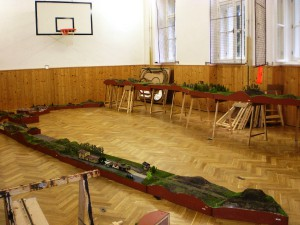

Modulové kolejiště se skládá z jednotlivých dílů (tzv. modulů), na kterých je znázorněn určitý úsek tratě. Okraje modulů, na které jsou vyvedeny koleje, mají shodný tvar čel – tzv. styčný profil, který vytváří profil terénu na okraji, včetně přesné návaznosti kolejnic na sebe, takže moduly lze spojit dohromady. Spojením více modulů navzájem vznikne kolejiště, které napodobí skutečnou trať. Velikost a tvar modulů není omezen, námětem může být trať i stanice.



Sestavené kolejiště může při každém setkání modelářů měnit svůj tvar a půdorys, protože moduly, které jsou vybaveny stejným styčným profilem, lze vzájemně zaměňovat.
Přechodové profily


Výhody modulové koncepce
- Menší náročnost – postavit první modul je mnohem snazší a rychlejší než celé kolejiště. Možnost pozorovat postavený modul, zapojený do sestavy kolejiště, je nejlepší motivací k další práci – pro žáky i dospělé.
- Variabilita obtížnosti – při stavbě lze zvolit motiv vhodné obtížnosti (od jednoduchého traťového úseku až po stanici). Každý modelář vypracuje model do úrovně, kterou zvládne, aniž by ovlivňoval práci ostatních členů.
- Otevřená struktura – provozu kolejiště se teoreticky mohou aktivně účastnit i modeláři-nečlenové, kteří vlastní modul(y) vybavené shodným styčným profilem.
- Skladnost modulů – v době, kdy není kolejiště provozováno, se moduly snáze uskladní a není zbytečně blokována místnost a na kolejiště se nepráší.
- Variabilita sestav – sestavené kolejiště může pokaždé změnit tvar a proporce.